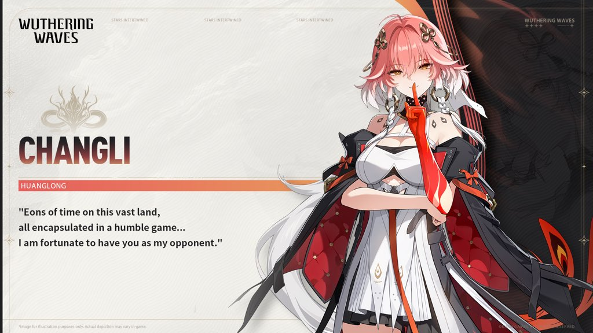
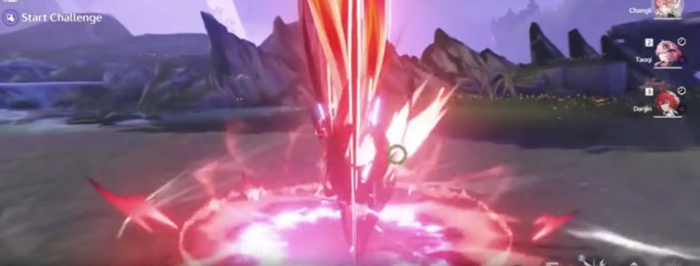
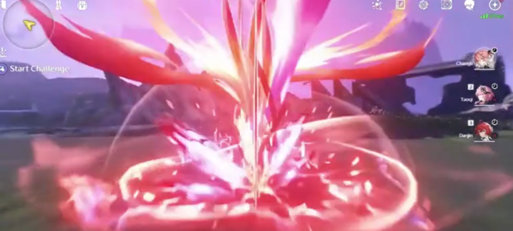
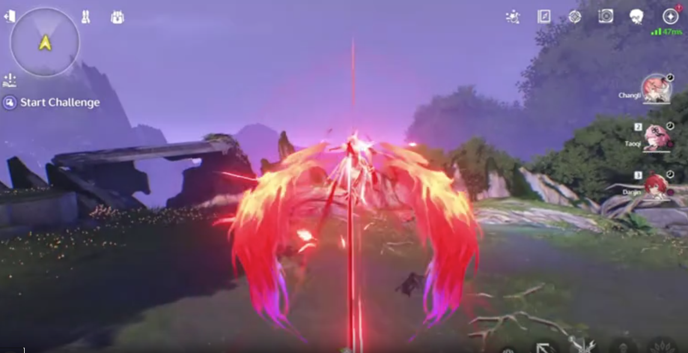
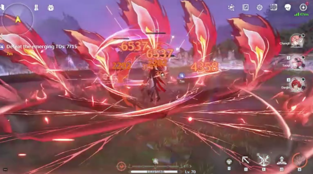
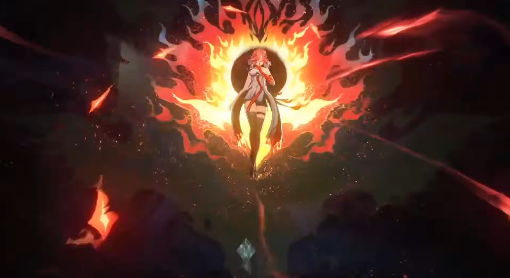
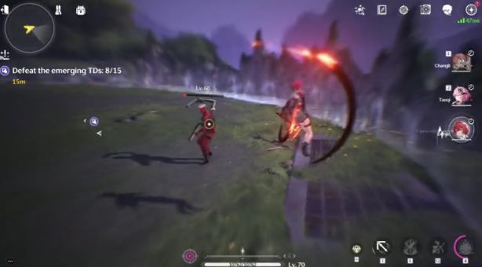

Changli is a playable 5-star Fusion Sword character in Wuthering Waves (WuWa). Check out this guide for the best Changli gameplay.
Charging Changli's Forte Circuit gauge is a core component of her gameplay.
Do note that using a Mid-air Attack after casting Changli's Heavy Attack immediately leads to her third Mid-air Attack. Also, doing a Basic Attack after using her Plunge Attack leads to her third Basic Attack right away.
Other than Changli's normal attacks, Changli's Resonance Skill allows her to enter True Sight right away.
While not stated in Changli's Forte descriptions,
doing a Basic Attack after her Dodge Counter also leads to her third Basic Attack.

Once Changli is in the True Sight state, you will then have to use her True Sight Abilities. Shown above are the two True Sight abilities that Changli can activate, Conquest and Charge. Each of the True Sight abilities provides one stack of Enflamement. 
You need four stacks of Enflamement to fully charge Changli's Forte Circuit gauge. When the gauge is fully charged, you can then use Heavy Attack: Flaming Sacrifice.
Her enhanced Heavy Attack deals a lot of damage and when you unlock her last Inherent Skill, it will ignore 15% of the enemy's DEF on-hit. The DEF ignore also applies to her Resonance Liberation.

Unlike Changli's True Sight abilities, her Resonance Liberation actually provides four stacks of Enflamement to fully charge her Forte Circuit gauge.
This allows you to immediately cast Changli's enhanced Heavy Attack right after using her Ultimate. Also, Changli gains an ATK buff after casting her Ultimate.

If needed, Changli can be the team's Sub-DPS since her Outro Skill buffs Fusion DMG and Resonance Liberation DMG to the ally switching in. Fusion characters like Encore can greatly benefit from the buffs Changli provides. 